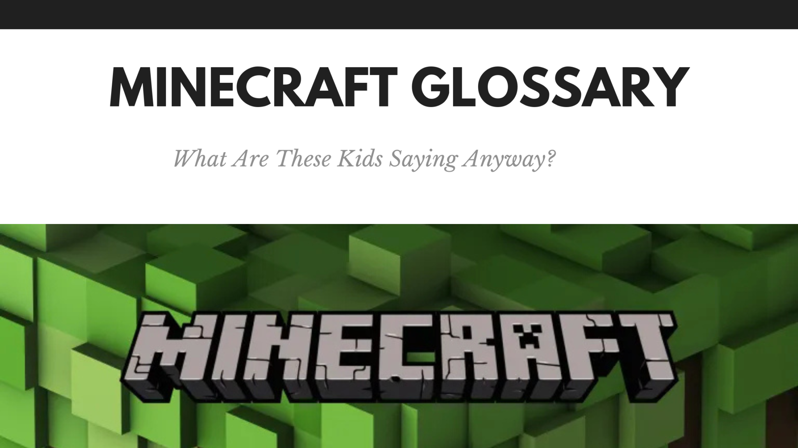
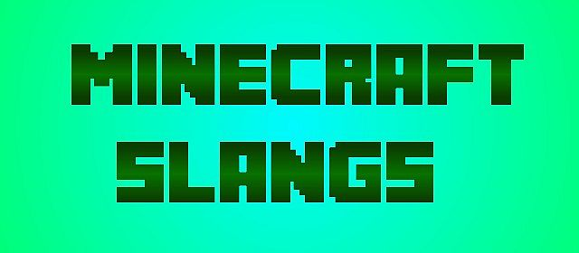

Glossario dei Termini
Spiegazione dei termini più comuni usati in Minecraft per aiutarti a capire meglio il gioco.
Termini Principali
- Mob: creature viventi nel gioco, ostili o passive.
- Bioma: area geografica con caratteristiche ambientali specifiche.
- Crafting: processo di creazione di oggetti combinando materiali.
- Redstone: materiale usato per creare circuiti e meccanismi.
- Enchanting: incantare oggetti per migliorarne le proprietà.


Altri termini utili
- Spawn: il punto dove i mob o giocatori appaiono.
- Nether: dimensione alternativa pericolosa e ricca di risorse.
- Ender Dragon: boss finale del gioco.
- Chunk: blocco di 16x16 blocchi usato per il caricamento del mondo.